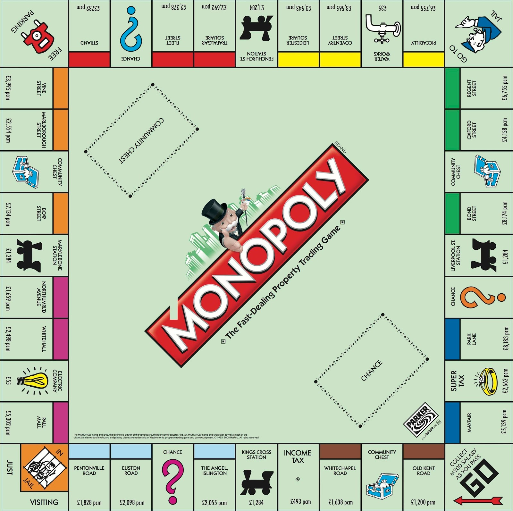

<div class="container mt-5">
  <div class="row">
    <div class="col-md-12">
      <h2 class="display-4 bi bi-dice-4-fill"> ¿Cómo se juega?</h2>
      <hr>
      <p class="lead">Este proyecto representa una colaboración entre el Instituto Provençana y la Universidad
        Politécnica de Barcelona.</p>
    </div>
    <div class="col-md-6">
      <div class="jumbotron">

        <p>El Monopoly, creado por los estudantes de la UPC, es un juego de ordenador de estrategia y
          negociación donde los jugadores compiten para acumular propiedades y riqueza. </p>
        <p>El juego se juega en un tablero que representa una ciudad dividida en propiedades, calles, estaciones de
          ferrocarril y servicios públicos. </p>
        <p>Cada jugador elige una ficha y recibe una cantidad de dinero inicial. Los jugadores lanzan los dados para
          moverse
          por el tablero, compran propiedades en las que aterrizan y cobran alquiler a otros jugadores que aterrizan en
          sus
          propiedades. </p>
        <p>El objetivo del juego es ser el último jugador con dinero y propiedades. </p>
        <p>El juego termina cuando queda solo un jugador en pie o cuando los demás jugadores se declaran en bancarrota.
        </p>
      </div>
    </div>

    <div class="col-md-6">
      
    </div>

  </div>
</div>